HOMEPROJECTS
Proof in the ground
Current and completed contracts for city councils, mining houses and power utilities across Zimbabwe.
FEATURED
Tap a project to open its full story, photos and scope of works.

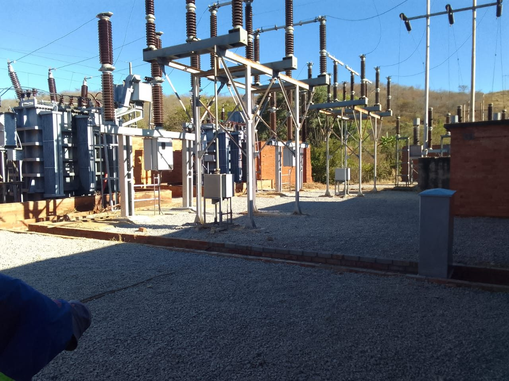
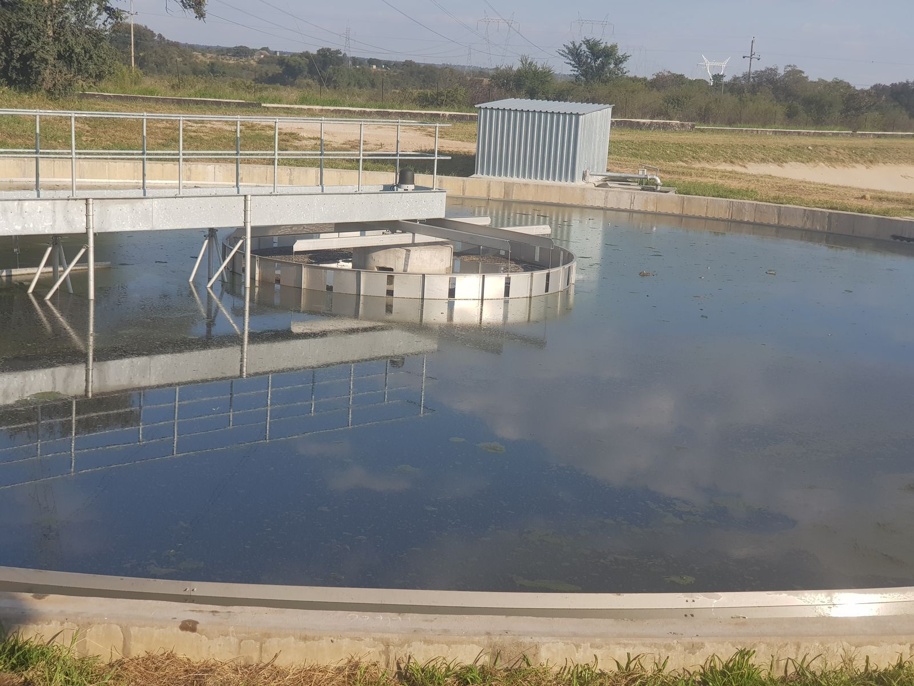
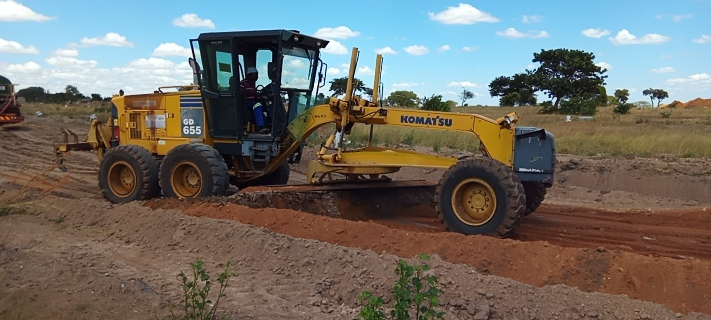
GALLERY
On site across our water, land and power projects. Filter by sector and tap any photo to view it full size.
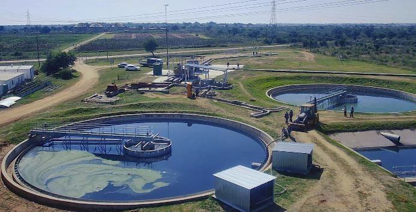
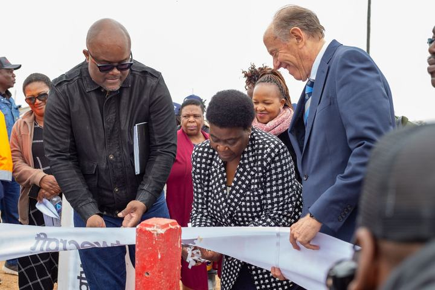


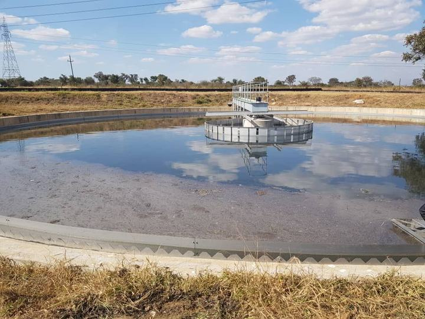


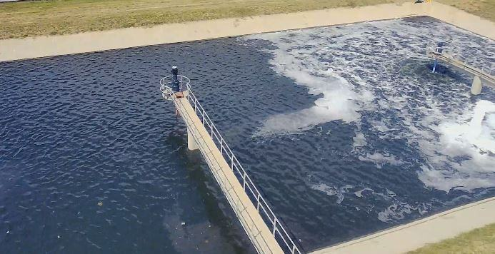
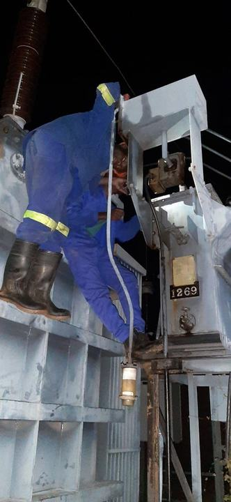
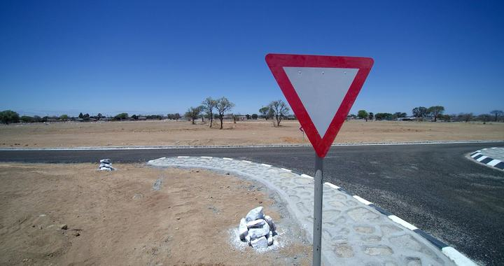
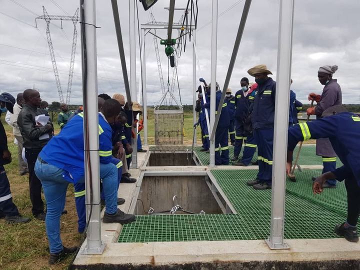
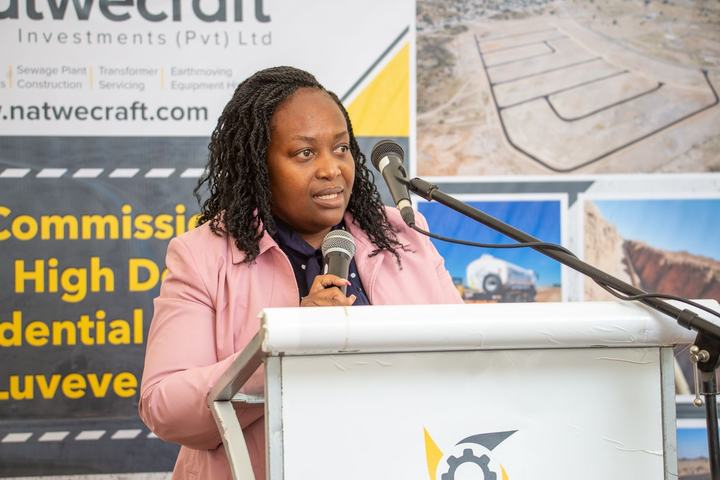
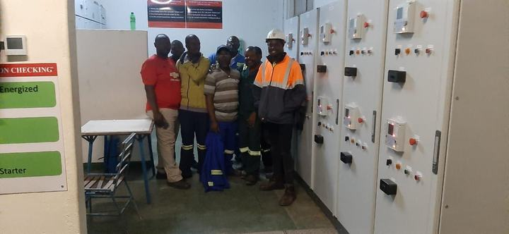
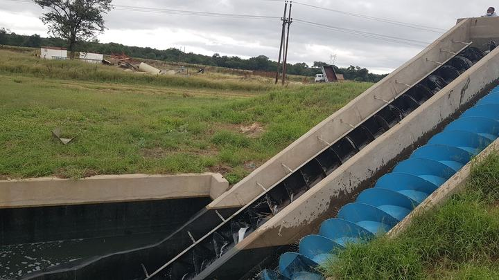
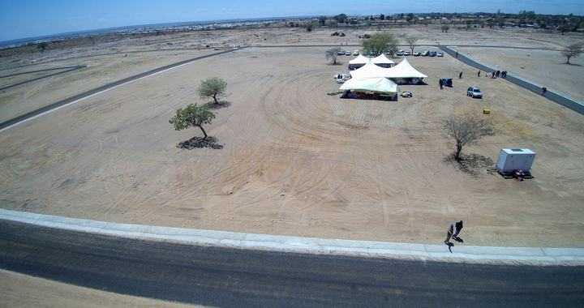
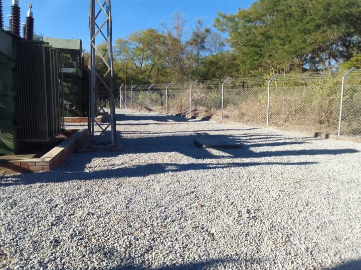
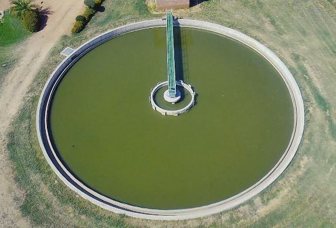
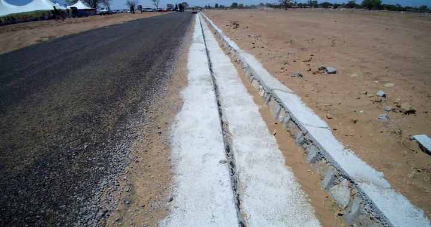
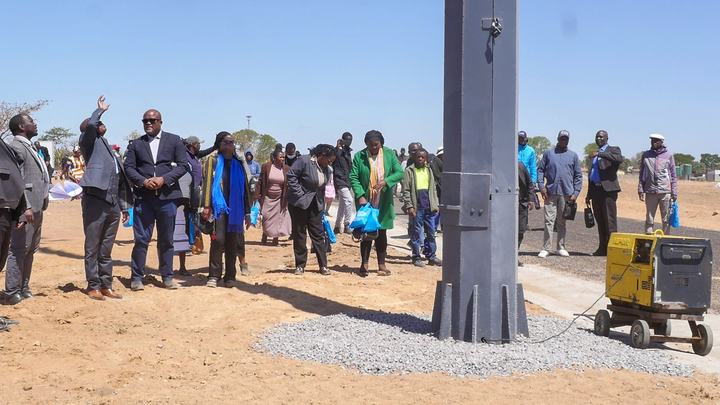
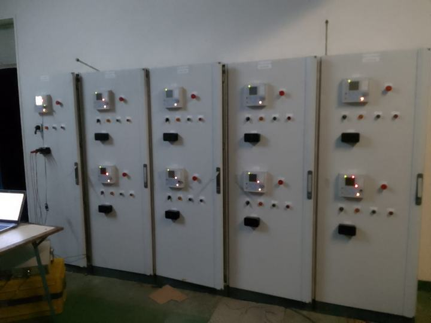
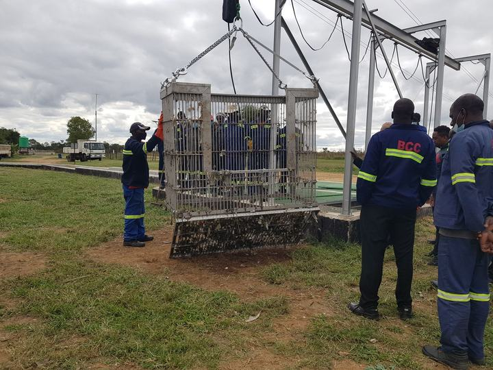
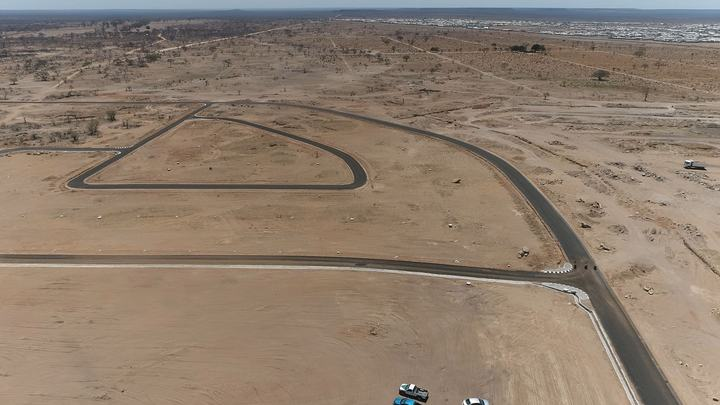
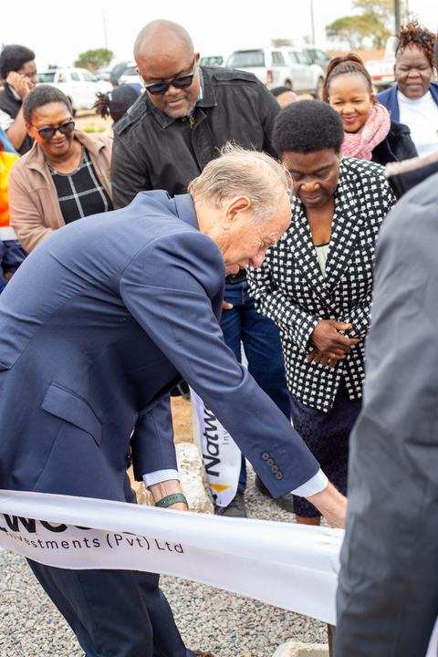
TRACK RECORD
Milestones, current contracts and the commissioned work behind our US$18.7 million project book.
MILESTONES
2017Aisleby 1 & 2 wastewater treatment plant rehabilitation begins, in joint venture with VeoliaWater 2022Bypass breakers and isolators contract completed for the City of BulawayoPower 2023Fernhill & Ncema pump stations upgraded under BWSSIP, funded by the African Development BankPower 2024Luveve North Phase 1 commissioned on 4 OctoberLand 2025Luveve North Phase 2 commissioned — all 453 stands deliveredLand| Client | Project | Period | Main Contractor | Contract Value |
|---|---|---|---|---|
| City of Bulawayo | Development of 453 high density residential stands at Luveve North Township (COB/ESD/C20/2023) | Jul 2023 – Aug 2025 | Natwecraft Investments | US$5,400,000.00 |
| City of Bulawayo | Supply and installation of bypass breakers and isolators | Sep 2021 – Sep 2022 | Natwecraft Investments & Rosco Africa | US$1,796,473.00 |
| City of Bulawayo | Rehabilitation of Aisleby 1 & 2 Waste Water Treatment Plant — civil, electrical & mechanical works | Jan 2017 – ongoing | Natwecraft Investments & Veolia Water Solutions and Technologies (JV) | US$4,575,721.18 |
GRAND TOTAL US$10,222,194.17
| Client | Project | Completion | Main Contractor | Invoiced Amount |
|---|---|---|---|---|
| City of Bulawayo | Development of 453 high density residential stands at Luveve North Township | 100% | Natwecraft Investments | US$5,400,000.00 |
| City of Bulawayo | Rehabilitation of SAST Waste Water Treatment Plant | 100% | Natwecraft Investments & Wamechsi Group JV | US$2,585,150.44 |
| City of Bulawayo | Development of 114 high density residential stands in Emganwini | 100% | Natwecraft Investments | US$1,012,720.25 |
| City of Bulawayo | Construction and commissioning of a sewer pump station | 100% | Natwecraft Investments | US$225,332.36 |
| Helcraw Electrical | Decommissioning, installation and commissioning of diesel generators | 100% | Natwecraft Investments | US$62,810.75 |
| Helcraw Electrical | Installation of draught motors | 100% | Natwecraft Investments | US$20,700.00 |
| Helcraw Electrical | Civil and electrical works at 11kV switching station in Kwekwe | 100% | Natwecraft Investments | US$669,862.67 |
| RHA Tungsten Mine | Hire of 30t mobile crane for 404 hours | 100% | Natwecraft Investments | US$49,243.00 |
| Zimbabwe Power Company | Hire of 5m³ front end loader for 360 hours | 100% | Natwecraft Investments | US$52,923.00 |
GRAND TOTAL US$8,528,742.47
NEXT PAGEContact us